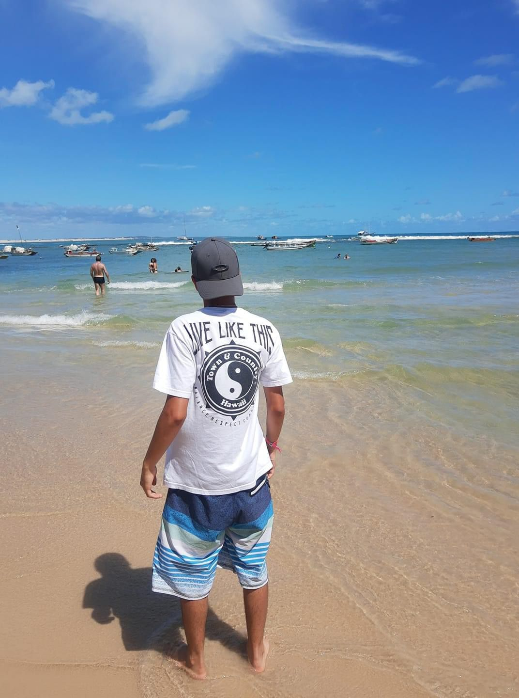

Sobre Mim: Desde criança estive em contato frequente com a natureza, e a parte dela que sempre me encantou de forma inexplicável, me fazendo ter uma paixão por ela desde muito pequeno foi praia. Talvez porque meu pai e a mãe dele (minha avó) sempre gostaram bastante de praia também, e uma vida inteira eu tive muito contato com praias, e meu pai sempre me incentivou a nadar, desde que eu tinha uns 3 anos, então foi a combinação perfeita, um amor pela natação e pela praia. Sem contar que eu acredito em Deus, e ver a beleza da praia, das águas, de toda essa obra de arte em si, me encanta muito e evidencia a magnitude de Deus. Então, por essa paixão imensa que tenho por praias (inclusive um dos meus objetivos é morar na praia) eu resolvi escolher esse tema.